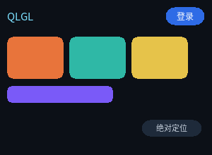

布局

完整程序：example/03_layout.c
这是一个"顶栏 + 三张卡 + 一条半宽色带 + 一个绝对定位徽标"的界面。 布局代码只有 CSS，没有一行 C。
flex 是主力
QLGL 的布局内核就是 flexbox 的一个子集。日常界面用它就够：
.bar {
display: flex; /* 这个容器按 flex 排子元素 */
align-items: center; /* 交叉轴（这里是纵向）居中 */
gap: 8px; /* 子元素间距，不占两端 */
height: 32px;
}
display: flex 与 display: block 的区别
block |
flex |
|
|---|---|---|
| 子元素怎么排 | 纵向一堆，每个占满宽度 | 按 flex-direction 排（默认横向） |
子元素能设置 flex-grow |
否 | 是 |
能用 gap |
否 | 是 |
flex-direction
.row { display: flex; flex-direction: row; } /* 默认，从左到右 */
.col { display: flex; flex-direction: column; } /* 从上到下 */
justify-content 管主轴
主轴 = flex-direction 的方向。所以 row 时它管水平，column 时管垂直。
.a { justify-content: flex-start; } /* 挤在开头（默认） */
.b { justify-content: center; } /* 居中 */
.c { justify-content: flex-end; } /* 挤在末尾 */
.d { justify-content: space-between; } /* 两端贴边，间距均分 */
.e { justify-content: space-around; }
.f { justify-content: space-evenly; }
align-items 管交叉轴
.a { align-items: stretch; } /* 拉满（默认） */
.b { align-items: flex-start; }
.c { align-items: center; }
.d { align-items: flex-end; }
flex-grow：把剩余空间按比例分
顶栏里"左 logo、右按钮"是最常见的需求。做法是中间塞一个空的伸缩块：
<div class="bar">
<div class="logo">QLGL</div>
<div class="spacer"></div> <!-- flex-grow: 1 -->
<div class="btn">登录</div>
</div>
.spacer { flex-grow: 1; }
flex-grow 是权重，不是百分比。两个 flex-grow: 1 和一个 flex-grow: 2
会把剩余空间分成 1:1:2。
一条容易踩的语义：flex 项的
width: auto是 max-content（内容多大就多大）， 而不是 block 布局里的"撑满容器"。所以上面那个空的.spacer基准尺寸是 0， grow 分到的就是全部剩余空间；旁边的.btn写死56px就一直是 56px， 不会被挤扁。（这条以前实现错了，test_flex_auto现在钉着它。）
::: tip
很多框架把这种写成一个"自动推挤"的工具类。QLGL 里就是 flex-grow: 1，
没有魔法。
:::
百分比按父容器算
.half { width: 50%; } /* 父容器 300px → 150px */
可以混用：width: 80px 的固定卡 + width: 50% 的伸缩带，同一个容器里也行。
position 管叠加
flex 管"排队"，position 管"叠加"。三个值：
| 值 | 含义 |
|---|---|
static |
默认，参与正常布局 |
relative |
还在布局里，但可以用 top/left 相对自己的位置偏移；同时成为子元素绝对定位的参照 |
absolute |
脱离布局，按最近的已定位祖先的 padding 盒定位 |
fixed |
同 absolute，但参照视口 |
.badge {
position: absolute;
left: 200px; top: 170px; /* 相对 #root 的左上角 */
width: 86px; height: 24px;
}
因为 #root 没写 position，absolute 的参照就是视口本身
（在这个程序里视口 = #root 的尺寸，所以看起来一样）。
想让徽标相对某张卡定位，就在卡上写
position: relative。
布局结果是可以直接读的
布局完成后每个节点都有 border_box / content_box / paint_box：
ql_ui_layout(ui, 300, 220);
for (uint16_t i = 0; i < ui->node_count; i++) {
QLRect b = ql_ui_node_rect(&ui->nodes[i]);
printf(" #%u %4d,%-4d %3dx%-3d\n", i, (int)b.x, (int)b.y, (int)b.w, (int)b.h);
}
这个程序打印出来是（编号 = 文档顺序，父在前）：
#0 0,0 300x220 ← #root
#1 10,10 280x32 ← .bar（margin 10，所以从 10,10 开始）
#2 10,11 37x23 ← .logo，宽度由文本撑开
#3 55,23 171x0 ← .spacer，flex-grow 吃掉了剩余空间
#4 234,10 56x26 ← .btn，固定 56 宽，贴右边界
注意 #4 的右边界是 234 + 56 = 290，正好等于 #1 的右边界（10 + 280）——
这说明 grow 分配没有丢余数。
调试布局时这是最直接的办法 —— 不用猜，直接读。
单位只有一个
布局、QLUI、控件层、自定义绘制，一律是 CSS 像素（整数）。
唯一做换算的地方是绘制后端入口：QLDraw2D 会把 CSS px 乘上 scale_fx
（26.6 定点），变成设备像素。所以：
- 高 DPI 不需要动任何布局代码；
- 布局结果是确定的整数，没有浮点误差累积；
- 亚像素（
translate(0.5px)）在绘制期表达，不进布局。
明确不支持的
写错就是编译期报错，不会"凑合"：
float / grid / align-self / align-content / order / flex-flow
min-width / max-width / min-height / max-height
em / rem / vh / vw / calc() / @media
也不是全都缺 —— 你的界面真的需要这些时，多半说明结构可以简化。